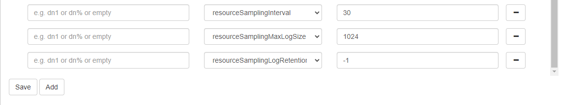

用户级别的资源跟踪详解
DolphinDB 自 2.00.11 版本开始引入了用户级别的资源跟踪功能，涵盖了对数据节点资源利用和用户操作的监控。这一功能使用户能够获取有关 CPU 和内存使用情况的详细信息，记录用户对分布式表发起的 SQL 查询次数以及读取表的行数和数据量大小等数据。通过这些信息，用户能够深入了解 DolphinDB 在系统中的行为，从而更好地优化操作，提升整体系统性能。
本文将从原理、环境配置、使用资源跟踪功能、常见问题等四个方面介绍如何使用 DolphinDB 用户级别的资源跟踪功能。
1. 原理
DolphinDB 服务器后端通过采样方式收集 CPU 和内存使用量信息，通过记录方式收集分布式 SQL 查询的执行情况，包括执行分布式查询的用户名、查询频率、涉及的分布式表的行数和大小等详细信息。通过这些统计信息，可以将采样的 CPU 和内存使用量归类到每个用户，从而跟踪每个用户使用的资源，分摊使用成本。
1.1. 日志收集
启用该功能后，系统将以 CSV 格式保存两类日志在各个数据节点下，以下分别进行介绍。
1.1.1. CPU 和内存使用量日志
路径为：<HomeDir>/resource/hardware.log，其中 <HomeDir> 可通在数据节点运行 getHomeDir() 函数获取。日志样例如下：
timestamp,userId,cpu,memory
2023.12.15T08:38:17.219438396,guest,0,32
2023.12.15T08:38:17.219438396,admin,0,16
2023.12.15T08:38:18.219753330,guest,0,32
...
2023.12.15T08:38:21.220409418,guest,0,32其中每列的含义分别为：
- timestamp: NANOTIMESTAMP 类型的时间戳，是数据采样的时刻。
- userId: 用户名。
- cpu: CPU 使用量，具体是指当前用户占用的线程数量。
- memory: 内存使用量，具体是指当前用户所有堆中的变量大小，单位是字节。
在采样间隔为 30 秒时，日志中每个用户每日大约增加 120KB 的数据量。
注意：日志不统计通过共享函数（share 函数）共享的对象内存使用量。
1.1.2. SQL 查询分布式表日志
路径为：<HomeDir>/resource/access.log，其中 <HomeDir> 可通过在数据节点运行 getHomeDir() 函数获取。
以对单个分布式表的查询为例，日志样例如下：
timestamp,rootQueryId,userId,database,table,type,value,script
2023.12.15T09:53:52.806155145,314d9a90-8111-bf90-3443-671fd71a7d82,admin,dfs://test,pt,sql,1,"select timestamp,price * count as price_mul from ej(pt,dt,(pt.sym),(dt.sym),,) where timestamp < 2001.01.01"
2023.12.15T09:53:52.950018450,314d9a90-8111-bf90-3443-671fd71a7d82,admin,dfs://test,pt,rowCount,46080,""
2023.12.15T09:53:52.950068788,314d9a90-8111-bf90-3443-671fd71a7d82,admin,dfs://test,pt,memUsage,15409424,""其中每列的含义分别为：
- timestamp: NANOTIMESTAMP 类型的时间戳。如果 type 是 sql，则这里记录开始执行 SQL 的时间戳；如果 type 是 rowCount 或 memUsage，则这里记录的是读出数据的时间戳。
- rootQueryId: SQL 查询任务的 ID，是分布式 SQL 查询任务的唯一标识符。一个分布式查询会按分区拆分为多个 SQL 子查询。该 ID 为分布式查询及其拆分出的子查询的根 ID。
- userId: 用户名。
- database: 数据库名。
- table: 表名。
- type: 记录的信息类型，包括 3 类：sql, rowCount, memUsage。
- value:
- 当类型为 sql 时，为 SQL 查询任务的执行次数。该值总是为 1。
- 当类型为 rowCount 时，为读出的行数。
- 当类型为 memUsage 时，为读出的表的数据量，单位是字节。
- script: 当类型为 sql 时，记录 SQL 脚本，其他类型则为空字符串。
单表查询只会输出一条 sql 日志。与单表查询不同，多表查询涉及几个表，就会输出几条 sql 日志。
rowCount 和 memUsage 一一对应，但具体条数是不确定的，因为查询时，针对各个分区的查询会并发执行，每个线程会收集对应分区的日志，为了减少日志数量，所有记录最后会在采样线程里聚合再落盘，日志条数取决于最后采样线程的聚合结果。
注意：
数据量的资源跟踪只针对分布式表的 SQL 查询，不支持 update、delete、insert 等 SQL 语句。
表访问记录中的行数和大小只记录每次访问的行数和大小。例如维度表读入内存后，会记录每次访问的数据量，而非第一次读入内存的数据量。
不支持非标准 SQL 的嵌套 join。
以下例子中 dt1、dt2、dt3 均为使用 OLAP 引擎创建的维度表：
当运行
select * from ej(ej(dt1, dt2, "id"), dt3, "id")时，日志中只会有对 t3 的查询记录，而不会有对 t1、t2 的查询记录。2024.01.23T18:40:35.341150733,f315e88a-b58b-729e-b047-76a3feb275a1,admin,dfs://test,t3,sql,1,"select * from ej(ej(dt1,dt2,"Symbol"),dt3,"Symbol")" 2024.01.23T18:40:35.345098486,f315e88a-b58b-729e-b047-76a3feb275a1,admin,dfs://test,t3,rowCount,31,"" 2024.01.23T18:40:35.345102948,f315e88a-b58b-729e-b047-76a3feb275a1,admin,dfs://test,t3,memUsage,1264,""当运行
select * from dt1 inner join dt2 on dt1.id=dt2.id inner join dt3 on dt2.id=dt3.id时，日志中会有对 t1、t2、t3 的查询记录。2024.01.23T18:57:59.096083071,1ea66cde-2ee1-7da4-e34e-d08dfbe162a1,admin,dfs://test,t1,sql,1,"select * from ej(ej(dt1,dt2,(dt1.Symbol),(dt2.Symbol),,),dt3,(dt2.Symbol),(dt3.Symbol),,)" 2024.01.23T18:57:59.096525622,1ea66cde-2ee1-7da4-e34e-d08dfbe162a1,admin,dfs://test,t1,rowCount,31,"" 2024.01.23T18:57:59.096529406,1ea66cde-2ee1-7da4-e34e-d08dfbe162a1,admin,dfs://test,t1,memUsage,1264,"" 2024.01.23T18:57:59.096088858,1ea66cde-2ee1-7da4-e34e-d08dfbe162a1,admin,dfs://test,t2,sql,1,"select * from ej(ej(dt1,dt2,(dt1.Symbol),(dt2.Symbol),,),dt3,(dt2.Symbol),(dt3.Symbol),,)" 2024.01.23T18:57:59.096686731,1ea66cde-2ee1-7da4-e34e-d08dfbe162a1,admin,dfs://test,t2,rowCount,31,"" 2024.01.23T18:57:59.096692660,1ea66cde-2ee1-7da4-e34e-d08dfbe162a1,admin,dfs://test,t2,memUsage,1264,"" 2024.01.23T18:57:59.096092759,1ea66cde-2ee1-7da4-e34e-d08dfbe162a1,admin,dfs://test,t3,sql,1,"select * from ej(ej(dt1,dt2,(dt1.Symbol),(dt2.Symbol),,),dt3,(dt2.Symbol),(dt3.Symbol),,)" 2024.01.23T18:57:59.113749751,1ea66cde-2ee1-7da4-e34e-d08dfbe162a1,admin,dfs://test,t3,rowCount,31,"" 2024.01.23T18:57:59.113760281,1ea66cde-2ee1-7da4-e34e-d08dfbe162a1,admin,dfs://test,t3,memUsage,1264,""
1.2. 日志拆分和回收
上述两类日志的数据量估计大概如下：
- CPU 和内存的日志：在采样间隔为 30 秒的情况下，预计 100 个用户一年将产生约 4GB 的日志。
- SQL 查询的日志：以每秒发生 300 次单表 SQL 查询为例计算，一年预计将产生约 3TB 的日志。
为了有效管理这些日志数据，DolphinDB 提供了以下配置参数，用于进行日志的拆分和回收：
- 参数 resourceSamplingMaxLogSize：该参数表示资源跟踪日志的切割阈值，单位为 MB，默认值为 1024。拆分后的日志文件名将添加时间前缀作为存档的文件名。例如，拆分后的日志文件名为 20231101162302_access.log，表示在 2023 年 11 月 01 日 16:23:02 时切割的日志。
- 参数 resourceSamplingLogRetentionTime：该参数指定资源跟踪日志的最长保留时间，单位为天。默认值为 -1，表示不进行日志回收。用户可以根据需求设置保留时间，以避免历史日志占用过多存储空间。
1.3. 资源用量查询
2. 环境配置
- 单节点服务器配置
若使用单节点服务器，执行以下 Shell 命令修改 dolphindb.cfg 配置文件：
cd <DolphinDBInstallDir>/server
vim ./dolphindb.cfg添加如下配置项参数：
resourceSamplingInterval=30
resourceSamplingMaxLogSize=1024
resourceSamplingLogRetentionTime=-1- 服务器集群配置
若使用服务器集群，可通过 Web 集群管理器对集群节点增加如下配置参数以开启功能。Web 集群管理器修改节点配置的具体操作方法，2.00.11 版本请参考集群总览，2.00.12及之后版本请参考集群节点配置。
resourceSamplingInterval=30
resourceSamplingMaxLogSize=1024
resourceSamplingLogRetentionTime=-1resourceSamplingInterval 指定是否开启资源跟踪功能及设置开启后采样的时间间隔，单位为秒。将其设置为正整数则表示开启功能。默认值为 -1，表示不开启此功能。resourceSamplingMaxLogSize 和 resourceSamplingLogRetentionTime 参数配置日志拆分与回收功能，具体配置见 1.2 小节。
注：对于 2.00.11 版本，Web 集群管理器上默认无法添加资源跟踪功能相关参数，需先手动将参数添加到各个节点的配置文件后，在 Web 集群管理器点击保存以开启功能。具体操作如下：
以 P1 服务器为例，首先登录 P1 服务器，执行以下 Shell 命令修改 cluster.cfg 配置文件，添加上述配置项参数。
cd <DolphinDBInstallDir>/server/clusterDemo/config
vim ./cluster.cfg重新进入 Web 集群管理器，点击 Nodes Config，可以看到相关参数已显示在页面中，点击 Save 保存后，重启节点即可开启功能。

3. 使用资源跟踪功能
3.1. 统计用户 CPU 和内存使用量
DolphinDB 提供 getUserHardwareUsage([from=0], [to]) 函数，按时间范围 [from, to) 查询本节点的 CPU 和内存使用量。该函数仅限管理员在数据节点上调用。关于函数的具体定义和返回参数请参考函数介绍。
- 使用示例 - 统计用户的 CPU 和内存使用量
在 DolphinDB 交互界面输入以下语句以查询自 2023.12.13 起的各个用户的 CPU 和内存用量信息：
login("admin", "123456")
// 获取数据节点别名
dataNodeAlias = exec name from rpc(getControllerAlias(), getClusterPerf) where mode in [0,3]
// 统计用户的CPU和内存使用量
select avg(cpu), max(cpu), avg(memory), max(memory) from pnodeRun(getUserHardwareUsage{2023.12.13}, dataNodeAlias) group by userId返回结果示例如下：
| userId | avg_cpu | max_cpu | avg_memory | max_memory |
|---|---|---|---|---|
| guest | 0.0025621494356346513 | 1 | 170.8757011287307 | 1,784 |
| admin | 2.1025543403018134 | 33 | 340,267.48612072546 | 230,831,112 |
3.2. 记录用户 SQL 访问分布式表信息
DolphinDB 提供 getUserTableAccessRecords([from=0], [to]) 函数，按时间范围 [from, to) 查询本节点的表访问记录。该函数仅限管理员在数据节点上调用。关于函数的具体定义和返回参数请参考函数介绍。
- 使用示例 - 统计分布式表的查询数据量
在 DolphinDB 交互界面输入以下语句以统计自 2023.12.13 起的分布式表的查询数据量：
login("admin", "123456")
// 获取数据节点别名
dataNodeAlias = exec name from rpc(getControllerAlias(), getClusterPerf) where mode in [0,3]
// 统计分布式表的查询数据量
dataUsage = pnodeRun(getUserTableAccessRecords{2023.12.13}, dataNodeAlias)
query = select distinct script, rootQueryId, timestamp from dataUsage where type="sql"
stats = select sum(value)
from dataUsage d inner join query q on d.rootQueryId = q.rootQueryId where type!="sql" pivot by q.timestamp, userId, database, table, q.script, type
if(count(stats)==0){
result = stats
}else{
result =stats.reorderColumns!(`timestamp`userId`database`table`memUsage`rowCount`script)
}
result返回结果示例如下：
| timestamp | userId | database | table | memUsage | rowCount | script |
|---|---|---|---|---|---|---|
| 2024.01.23 16:50:04.039117876 | admin | dfs://test | table2 | 496 | 31 | select * from ej(pt1,pt2,"Symbol") |
| 2024.01.23 16:51:46.409803857 | admin | dfs://test | table3 | 160 | 10 | select top 10 * from pt3 |
如果需要统计各个用户的内存使用情况和查询数据行数，可以用下面的语句进行统计：
select sum(memUsage) as memUsage, sum(rowCount) as rowCount from result group by userId返回结果示例如下：：
| userId | memUsage | rowCount |
|---|---|---|
| admin | 656 | 41 |
按照上面的统计方式，可以根据得到的统计信息来分摊多个用户的使用成本。
- 使用示例 - 统计分布式库表查询次数
在 DolphinDB 交互界面输入以下语句以统计自 2023.12.13 起的分布式库表查询次数：
login("admin", "123456")
// 获取数据节点别名
dataNodeAlias = exec name from rpc(getControllerAlias(), getClusterPerf) where mode in [0,3]
// 库表查询次数
result = select count(*) from pnodeRun(getUserTableAccessRecords{2023.12.13}, dataNodeAlias) where type="sql" group by userId, database, table
result返回结果示例如下：
| userId | database | table | count |
|---|---|---|---|
| admin | dfs://test | table2 | 9 |
| admin | dfs://test | table3 | 19 |
如果想要按照查询次数来分摊多个用户的使用成本，同样可以使用 group by 进行统计：
select sum(count) as count from result group by userId返回结果示例如下：
| userId | count |
|---|---|
| admin | 28 |
3.3. 在线关闭资源跟踪功能
在某些情况下，若需关闭该功能，可在需要关闭的数据节点上执行 disableResourceTracking() 函数，在线关闭该数据节点的资源跟踪功能：
disableResourceTracking()若希望重新开启该功能，可在需要开启的数据节点上执行 enableResourceTracking() 函数，在线开启该数据节点的资源跟踪功能：
enableResourceTracking()注意：
- 仅当资源跟踪功能开启后（即 resourceSamplingInterval 启动参数配置为正整数后），才支持在线开启和关闭。
- 每个线程将会独立存储 SQL 查询的记录，每次到达 resourceSamplingInterval 指定的采样时间，会从所有线程汇总这些记录写入日志。在关闭资源跟踪时，将清理内存中尚未写入日志的记录，这部分记录内容将不会记录在日志中，也无法使用
getUserTableAccessRecords函数查询到。 - 资源跟踪开启和关闭不影响日志回收。
- 函数仅限管理员在数据节点上调用。
4. 常见问题
4.1. failed to scan the resource log directory
执行资源跟踪相关函数报错：failed to scan the resource log directory […] with error: No such file or directory
若出现如上错误，请检查：
- 集群是否正确配置资源跟踪功能，请参考第 2 节检查环境配置。
- 是否在非数据节点执行了资源跟踪函数，
getUserHardwareUsage()和getUserTableAccessRecords()函数仅限管理员在数据节点上调用。
4.2. 开启该功能对系统性能的潜在影响
该功能在设计上不涉及全局锁，所有收集的数据存储在线程独立的内存里，定时写日志，总体性能开销很小。